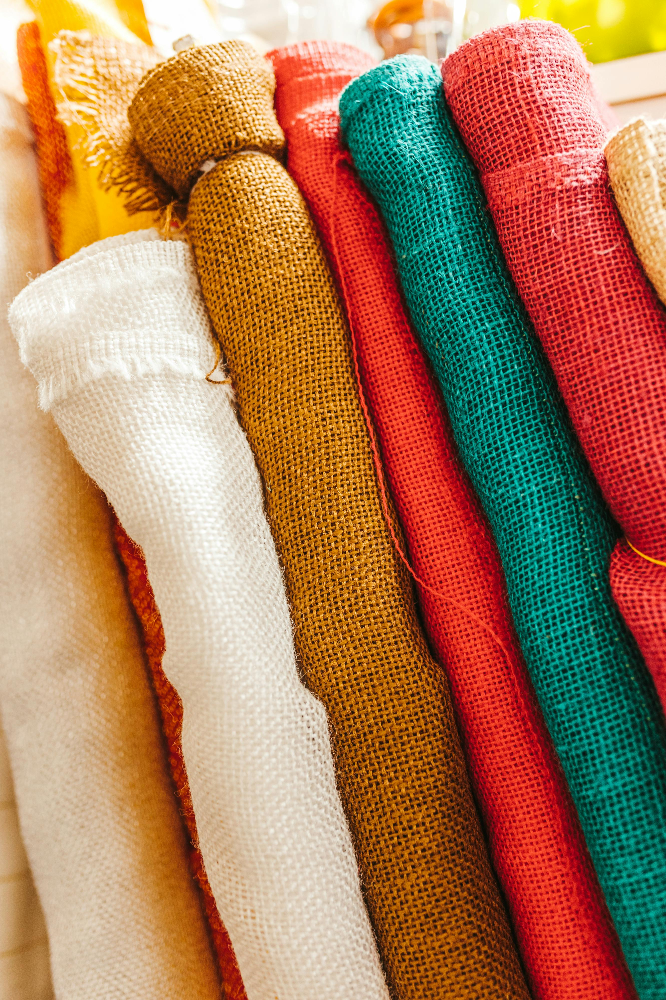
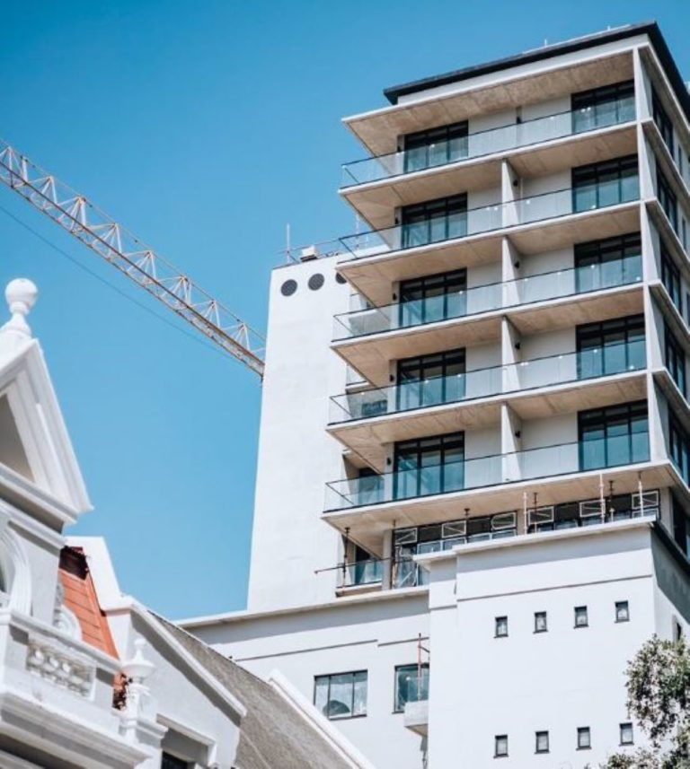

Hemp Uses & Benefits
Hemp can be used in textiles, food, biofuel, building materials, and health supplements. Its seeds are highly nutritious, and CBD extracts are increasingly popular for wellness and pain management.


